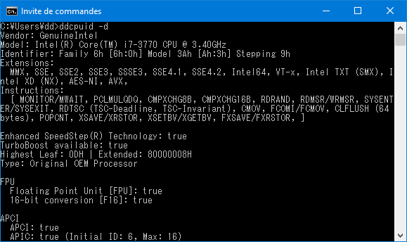
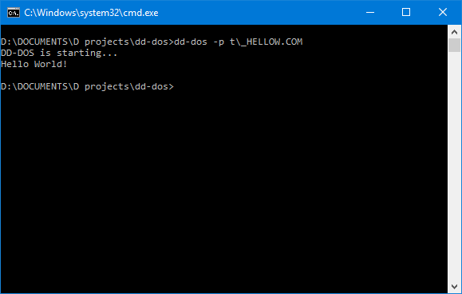
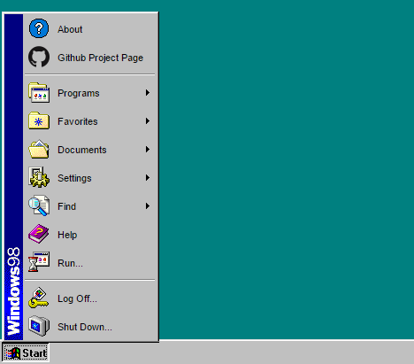
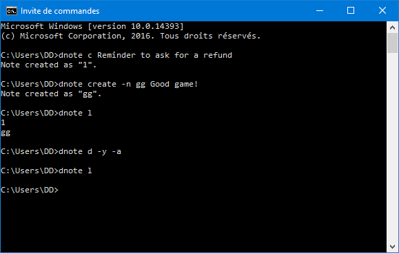

dd86k
Programmer, IT Technician, System Administrator
Hello!
I've always been interested in system engineering: Micro-processor architecture, machine code, and system-level software. I have a passion for programming and making utilities.
People call me dd, and I do quite a few things, such as system-level programming (C, D), object-oriented programming (C#), web programming (HTML5, CSS3, Javascript, PHP), scripting (Batch, Bash), system administration (Windows, Linux), virtualization (Microsoft Hyper-V, VMWare Workstation and ESXi/vSphere, Oracle VirtualBox), and other stuff regarding IT in general (networking, tech support).
Projects


ddcpuidddcpuid is a processor information tool. 2016-2018 D x86asm |
dd-dosdd-dos aims to be a simple DOS emulator. 2017-2018 D WIP |
Windows 98 Web SimulatorStarted while doing my last school project, now an on-going project as Windows 98 Web Simulator. 2015-2016 Web |
dnotednote is a simple CLI note application. 2017 D |


Contributions
PonySFM Workshop
PonySFM Workshop is an application which aims to be a modern mod manager for the PonySFM website. 2016 C# WPF |
Contact me
I am fully bilingual in French and English!
- Github profile
- Telegram (Tell me you came from!)
You may also visit my old stuff, which was once on another website.